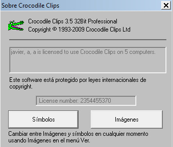
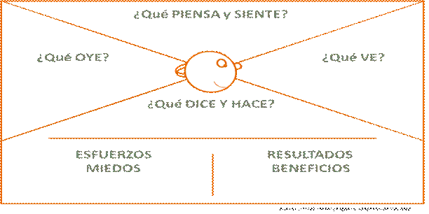
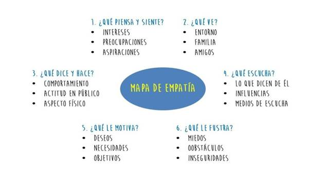

PROCESO DIRECCIÓN DE FORMACIÓN PROFESIONAL INTEGRAL
FORMATO GUÍA DE APRENDIZAJE
IDENTIFICACIÓN DE LA GUÍA DE APRENDIZAJE
Denominación del Programa de Formación: CURSO INTRODUCTORIA A LA FORMACIÓN PROFESIONAL INTEGRAL
Código del Programa de Formación: 41311582
Fase del Proyecto: Análisis
Actividad de Proyecto: Reconocimiento institucional, de las oportunidades ofrecidas y de los compromisos asumidos como aprendiz en el SENA.
Competencia: Resultado de aprendizaje de la inducción Código: 240201530
Resultados de Aprendizaje a Alcanzar:
a. Identificar la dinámica organizacional del SENA, su estructura corporativa, políticas y normatividad esencial de acuerdo con los parámetros establecidos por la entidad.
b. Identificar la características, metodologías y medios para la formación integral en el SENA, de acuerdo con la dotación de ambientes de los centros de formación.
c. Identificar el aporte desde el plan de acción con el proyecto de vida y el desarrollo profesional del aprendiz de acuerdo con el plan nacional de bienestar al aprendiz.
d. Identificar la propuesta de la formación profesional integral con su tipología, niveles y resultados esperados de acuerdo con el diseño curricular de los programas propuestos.
Duración de la Guía: 40 Horas
2. PRESENTACIÓN
La inducción es el proceso inicial de la formación en el SENA, el cual, busca que el aprendiz desarrolle las competencias básicas y necesarias para navegar con fluidez en su aprendizaje. La inducción es un factor clave de éxito en el proceso de formación; es el punto de partida en el cual el aprendiz reconoce la entidad, la normatividad y servicios institucionales, así como, el programa de formación, su proyección laboral y la estrategia de formación y el aprendizaje que el SENA ofrece. [1]
Como parte importante de la formación del SENA, es necesario que como aprendiz inicie el proceso de formación, identificando, la Institución a la que ingresa y ubicándose en el medio y sector en que está involucrado su programa de formación a nivel local, regional y global.
En esta fase de la formación, usted como aprendiz tiene muchas inquietudes: ¿dónde estoy?, ¿qué es el SENA?, ¿qué me ofrece el SENA como aprendiz?, ¿qué deberes, compromisos tengo por ser aprendiz matriculado en un programa de formación?, ¿cuáles son mis derechos como aprendiz?, ¿cuál es la metodología de formación?, ¿qué ambientes de aprendizaje tiene el programa?, ¿qué tecnologías de la información y comunicación debo manejar para desarrollar el programa de formación? ¿Qué deseo hacer con mi vida?
3. FORMULACIÓN DE LAS ACTIVIDADES DE APRENDIZAJE
ACTIVIDADES DE CONTEXTUALIZACIÓN E IDENTIFICACIÓN DE CONOCIMIENTOS NECESARIOS PARA EL APRENDIZAJE, ELABORO UN PERIÓDICO (Actividad para realizar durante todo el proceso)
Con mi grupo colaborativo conformado por mi instructor o conformado por criterios propios, elaboro un periódico digital que me permita organizar toda la información adquirida en éste proceso de inducción, bien sea textos e imágenes producidas en el transcurso del mismo; es importante que recuerde que todo periódico tiene como finalidad informar los acontecimientos que suceden, por lo tanto, en la elaboración de mi periódico contaré lo que he venido aprendido acerca del SENA y para poderlo llevar a cabo planeo con mi equipo colaborativo las secciones que debe contener, las cuales deben guardar relación con lo trabajado en éste proceso, se recomienda:
● Plana: Es la página sobre la que se escriben las noticias.
● Primera plana: es la plana principal del periódico, es lo que todos conocemos como portada del periódico. Aquí se muestran las noticias más relevantes para captar la atención del público y que este se interese en leer el periódico.
● Titular: es la frase con la que se identifica a una noticia, siempre es en negritas y de un tamaño mayor al de la noticia.
● Noticia: corresponde a toda la información que da hecho al suceso o información de interés, se describen lugares, fechas, participantes, etc, pudiendo citarse frases dichas o escritas en algún otro medio.
● Columna: es un artículo en el cual el autor estampa su opinión o punto de vista con respecto a algún tema en particular, pudiendo ser de actualidad, deportes, sociedad, economía, etc. Generalmente una columna lleva adjunto el nombre del autor y a veces hasta una fotografía y la firma de él, es por esto que se debe tener una buena credibilidad para poder llegar al público y no ser rechazado por posibles prejuicios que existan contra el autor.
● Suplemento: son secciones del periódico que están dedicadas a temas de interés según la estación o la ocasión. Buscan captar la atención del público aludiendo a la estación o momento que se está viviendo, por ejemplo, si se está en diciembre se podría hacer un suplemento dedicado a las fiestas navideñas, de esta manera se atrae a público que podría no ser lector habitual del periódico, pero le interesa el suplemento de navidad. Los suplementos también son usados por los periódicos para atraer más anunciantes que estén dispuestos a poner su publicidad en temas que son de interés para el público.
● Secciones: son las partes del periódico donde se mostrará información agrupada bajo la misma categoría. Las secciones típicas de un periódico son noticias internacionales, noticias nacionales, deportes, entretenimiento y ocio, anuncios clasificados, etc.
● Cabecera: en esta parte se muestra el nombre, logotipo y el eslogan del periódico. Está ubicada en la parte superior tanto en la primera plana como en las demás planas.
● Orejilla: son anuncios que van en la primera plana del periódico, pueden ir en la parte superior o en la parte inferior de la primera plana y despliegan información comercial de otras empresas, productos o servicios.
O en su defecto, creo el propio diseño de mi periódico; es importante, que todas las producciones, resultados de test, fotografías, consultas y la información de bienestar, biblioteca, contrato de aprendizaje aparezcan en la misma producción, así, de esta manera recogeré en un solo producto todas las evidencias obtenidas.
Para tener como punto de apoyo, el instructor nos recomienda utilizar todos los link proporcionados y a su vez acceder al siguiente:
Al final de cada actividad contaré con un espacio de tiempo para alimentar mi periódico y al final del proceso tendré un espacio de tiempo más prolongado para elaborarlo y terminarlo.
Evidencia de Desempeño: Participación en la construcción del periódico digital con mi grupo colaborativo.
Evidencia de Producto: Elaboración de un periódico digital con mi grupo colaborativo.
ACTIVIDADES DE APROPIACIÓN, ELABORO EL CUENTO DE MI VIDA (Actividad para realizar de manera autónoma)
Veo el vídeo el Circo de la Mariposa y me reúno con los compañeros que desee formando subgrupos entre 4 y 5 aprendices, y resuelvo con ellos las siguientes preguntas e inquietudes, ¿qué me dejó de aprendizaje?, ¿Qué escena del vídeo me impactó más?, ¿Con cuál de las frases mencionadas me identifico?
Escucho la explicación de la actividad del cuento de mi vida, el cual debo empezar a escribir autónomamente, es decir, escribo "El cuento de mi vida", desde que nací, las cosas que me han contado y algunas vivencias importantes. Llevo el cuento de mi vida a casa y averiguo con personas de mi familia otros aspectos y los escribo. Estos aspectos pueden ser: Cuándo y cómo se conocieron mis padres, abuelos y otras generaciones de ancestros, historias de ellos, de donde escogieron el nombre que tengo, qué significa, experiencias de mi niñez y anécdotas familiares. Incluyo fotografías en el documento que realice. Posteriormente vuelvo a retomar mi cuento para socializarlo con mis compañeros e instructor.
Instrucciones: Guardo "El cuento de mi vida", en el portafolio de evidencias y reflexiono sobre la experiencia.
ACTIVIDADES POR RESULTADO DE APRENDIZAJE #1: Identificar la dinámica organizacional del SENA, su estructura corporativa, políticas y normatividad esencial de acuerdo con los parámetros establecidos por la entidad.
1. ACTIVIDAD DE REFLEXIÓN INICIAL
Usted como aprendiz es la razón de ser de esta entidad, a través de la elaboración de un mapa de empatía, herramienta utilizada en el mundo de los negocios para segmentar la clientela, se quiere identificar qué conocimientos y experiencia previa tiene sobre el SENA.
Es importante que reconozca sus conceptos y apreciaciones de la institución a la que usted ha llegado, para ello, se propone que se reúna con sus compañeros y una vez conformado el grupo, desarrolle un mapa de la empatía, en este mapa, escribir:
● ¿Que ha escuchado, que sabe, que ha visto y que piensa y siente del SENA y este centro de formación?
● ¿Qué beneficios y resultados espero alcanzar en el SENA, en el centro de formación? ¿Qué necesidades y deseos reales espero lograr?
● ¿Cuáles son los obstáculos o frustraciones que puede encontrar al estudiar en el SENA y en el Centro de la innovación, la agroindustria y la aviación, cuáles esfuerzos tiene que hacer, a qué le tienen miedo, qué riesgos debe asumir?
Para desarrollar, esta actividad, por favor siga las orientaciones del instructor, para que al final quede el mapa construido de manera colectiva y se pueda identificar lo que el usted y el grupo saben, conocen, sienten y han escuchado sobre la institución que eligieron para estudiar y desarrollar su proyecto de vida.
Evidencia de desempeño: Participación en la construcción de la matriz de empatía me identifico con el SENA de manera colectiva.
Evidencia de producto: Mapa de empatía elaborado por el grupo.
Ejemplos de mapas de empatía:


Me acerco y conozco el SENA
Reflexiono a partir de las preguntas iniciales planteadas en las Actividades de Reflexión Inicial, las cuales me servirán de guía para realizar esta tarea.
Junto con mí equipo colaborativo, observo en internet los siguientes vínculos, para conocer cómo nació el SENA, los orígenes y la realidad que vivía el país en este momento:
● Historia del SENA:
● Símbolos del SENA:
● SENA, lugar de las oportunidades:
● SENA, igualdad de oportunidades:
● ¿Qué es el servicio público de empleo?
● ¿Qué es el contrato de aprendizaje?
Debo recordar visitar también, el blog del centro de formación, Centro de la Innovación, la Agroindustria y la Aviación, su dirección del blog es: http://senaoriente.blogspot.com/
Con la información observada en los links de los vídeos sobre el SENA y el blog de nuestro centro y con las demás actividades desarrolladas en esta guía de aprendizaje, debo desarrollar un esquema, gráfico, mapa, tabla o cuadro sinóptico que dé respuesta a las preguntas:
● ¿Dónde estoy formándome?
● ¿Qué oportunidades me ofrece el SENA para mi vida?
● ¿Qué compromisos tengo como aprendiz del SENA?
● ¿Qué otros servicios, plataformas, software, programas, sistemas están relacionados con mi formación en el SENA?
● Con mi equipo colaborativo, elaboro una secuencia de indicaciones o instrucciones por medio de pantallazos, acerca de cómo se debe ingresar a Sofía Plus y a la plataforma LMS, sería entonces dos instructivos de ingreso que debo presentar en el periódico digital.
RECONOZCO MIS DERECHOS Y DEBERES COMO APRENDIZ.
Mi instructor nos presenta el reglamento del aprendiz, un manual con indicaciones acerca de los derechos y deberes que tenemos en la institución; solicita que me reúna con mi equipo colaborativo para leer un cuestionario sobre el reglamento del aprendiz, para ello debo tener abierto el archivo con este material.
Terminado de realizar el cuestionario, mi instructor nos recomienda que nos dispongamos en mesa redonda para socializar y conversar acerca de las respuestas encontradas a la luz del reglamento del aprendiz.
Me reúno en los equipos establecidos por el instructor y preparo una breve dramatización que muestre la aplicación del debido proceso cuando se incurre en prohibiciones o incumplimiento de los deberes de los aprendices.
ACTIVIDADES POR RESULTADO DE APRENDIZAJE #2
EN MI CENTRO DE FORMACIÓN CIAA
Observo los siguientes videos institucionales y del centro de formación al cual pertenezco: Realizo preguntas y resuelvo inquietudes que me generaron:
Inducción SENA 2020, Bienvenida por el Director General del SENA Carlos Mario Estrada:
https://www.youtube.com/watch?v=RJGMQZ5hFRU
Video motivacional: SENA 2010-2017
https://drive.google.com/drive/folders/1aSNDeUHMeqV8PwkEF0EMsqA3QdsSAwUL
Video institucional SENA Oriente 2017
https://drive.google.com/drive/folders/0BxDO2z5qQExPWEI4VjQxd0pGbkE
EVIDENCIA DE DESEMPEÑO: Observación de los videos y aclaración de inquietudes.
CONCÉNTRESE ARMANDO PAREJAS SOBRE EL SENA
Para desarrollar ésta actividad, debo tener en cuenta la información recibida en la actividad de reflexión inicial: Me acerco y conozco el SENA, luego Ingreso al link:
http://www.educaplay.com/es/recursoseducativos/2243876/familiarizandonos_con_el_sena.htm
Ubico la actividad que se llama Familiarizándonos con el SENA, luego doy clic sobre el botón comenzar, a jugar y a recordar se dijo.
Observo cada recuadro, luego de acuerdo a la información, fotografías e imágenes, armo las parejas que correspondan, el juego termina cuando haya completado y obtenido un resultado de 100 puntos.
EVIDENCIA DE DESEMPEÑO: Cumplimiento, haber participado en el juego y logrando cada vez más, respuestas acertadas sobre el SENA.
ACTIVIDADES DE TRANSFERENCIA DEL CONOCIMIENTO
Me reúno con mi equipo colaborativo para realizar el siguiente trabajo:
● Ingreso a internet escribo la siguiente dirección: http://biblioteca.sena.edu.co
● Elija Sistema de Bibliotecas SENA.
● Ubique la pestaña Servicios, haga clic allí, luego en Formación y elija, Métodos de estudio.
● Por favor revise, lea y comprenda el material relacionado con métodos de estudio.
● Investigue que es una Línea de tiempo.
EVIDENCIA DE DESEMPEÑO: Teniendo en cuenta la actividad: Métodos de Estudio, elabore una línea de tiempo sobre el tema adaptando la información a los resultados arrojados en: Hábitos de estudio, test inteligencias múltiples y formato de identificación de los estilos de aprendizaje.
● Después de evaluar su línea de tiempo a la luz de una Rúbrica de la línea de tiempo y logrando un cumplimiento de un 70 % o más, debo ingresar mi línea de tiempo al periódico digital.
● En caso de que su cumplimiento sea inferior al 70% deberá revisarlo y corregirlo, antes de ingresarlo al periódico digital.
● Tutorial: Sistema de bibliotecas SENA-¿Cómo buscar en las bibliotecas del SENA?
https://www.youtube.com/watch?v=X-pHntQ03I8
BILINGUISMO:
Me reúno con mi equipo colaborativo para observar el siguiente link, sobre la importancia
del bilingüismo: La importancia de saber inglés:
https://drive.google.com/drive/folders/1gfBgiHkcCaTya8XlnpYbcRPUCIOffQD0
Después mi instructor nos invita a leer las diapositivas encontradas en el siguiente enlace:
SENA Bilingüe 2016-2018:
https://drive.google.com/drive/folders/1gfBgiHkcCaTya8XlnpYbcRPUCIOffQD0
Nuevamente me reúno con mi equipo colaborativo para conversar acerca de la importancia del inglés en nuestras vidas y en mi futuro profesional, luego hago una presentación por medio de una historieta acerca del tema: La importancia del inglés, la cual debe ser adjuntada en el periódico digital.
Mi instructor nos informa que:
Por requerimiento nacional la participación y correcta aprobación de los aprendices en los cursos virtuales de inglés será un requisito determinante al momento de la certificación técnica o tecnológica. Es válido destacar que el aprendiz tendrá toda la etapa lectiva para realizar correctamente los cursos que según su programa de formación lo exija. A continuación se relaciona los programas de formación que requieren una intensidad en inglés un poco más alta:
* Biotecnología Industrial
* Diseño de modas y confecciones
* Logística y transporte
* Informática diseño y desarrollo de software
* Tecnologías de mantenimiento predictivo, productivo y correctivo
(Sólo los programas relacionados con aeronaves)
* Tecnologías de gestión administrativa y servicios financieros.
(Gestión administrativa - Contabilidad y finanzas)
* Tecnologías de la información. Diseño y desarrollo de software
* Tecnologías de la información y las comunicaciones
* Tecnologías de servicios de salud
* Tecnologías de servicios turísticos
* Ventas y comercialización
* Técnico en mesa y bar
* Tecnólogo en Guianza turística
* Técnico en gestión comercial y telemercadeo
* Tecnología en gestión de mercados
Los grupos anteriormente relacionados deberán cursar un mínimo de:
● 5 niveles English Dot Works para Tecnólogos.
● 3 niveles English Dot Works para Técnicos.
Para el resto de grupos que no se encuentran en la relación anterior, el requerimiento es:
● 4 niveles English Dot Works para Tecnólogos
● 2 niveles English Dot works para Técnicos
En lo relacionado a la articulación con la media el requerimiento según circular 16060 del 2016 y aún vigente, el aprendiz debe aprobar 3 niveles English Dot Works por un total de 180 horas.
En compañía de mi instructor, me registro en los cursos virtuales de inglés que requiero para iniciar mi proceso de formación virtual, teniendo en cuenta mis conocimientos previos frente al idioma inglés. Para realizar la inscripción sigo este enlace:
https://www.youtube.com/watch?v=67kkoEWRQqI&t=2s
Evidencia desempeño: Observar al aprendiz haciendo uso de las plataformas, blogs y páginas web institucionales como: Sofía plus, pagina web del SENA, blog del centro de formación, de la biblioteca virtual entre otros. Observar el video la importancia del inglés y ver el power point SENA bilingüe 2016-2018
Evidencia de producto: Elaborar un manual de instrucciones que indiquen el paso a paso de ingreso a Sofía Plus y a la plataforma LMS.
ACTIVIDADES POR RESULTADO DE APRENDIZAJE #3
IDENTIFICO MIS POTENCIALIDADES
Con mi instructor y equipo colaborativo observo el video: Inducción SENA, estilos de aprendizaje, comprendo y dialogo con mis compañeros acerca de la información encontrada en el video y la relaciono con mi vida diaria, donde reconozco mis fortalezas y aspectos por mejorar.
Link video 1: http://youtu.be/lPVr6wNogdc
Link video 2: https://drive.google.com/drive/folders/0Bw66F-GmkpPDdENKUWFHWjBFRFk
Por sugerencia de mi instructor, el video 1 se detendrá en el momento que se presentan las opciones de respuesta a la dramatización vista, con el fin que cada uno observe el estilo de aprendizaje al que más se aproxima.
Seguidamente, mi instructor me presenta el video 2 para comparar las informaciones contenidas en ambos materiales en un conversatorio; posteriormente mi instructor entrega el formato de identificación de estilos de aprendizaje, el cual debo realizar y evidenciar el resultado allí obtenido.
Recibo el cuestionario sobre las inteligencias múltiples y de cómo aprendo. Esta actividad la realizo en forma autónoma.
En mi equipo colaborativo evalúo el resultado arrojado por el instrumento de evaluación de estilos de aprendizaje y de inteligencias múltiples; luego analizo los estilos de aprendizaje y los tipos de inteligencias que se encuentran en mi equipo y en conjunto formulamos cómo podemos potencializar nuestro trabajo colaborativo desde la diversidad identificada.
LOS MÉTODOS DE ESTUDIO
Actividad de aprendizaje: ¿Qué tipo de aprendiz soy ahora? Autoevaluación diagnóstica de cómo estudio.
Identifico los hábitos de estudio a través de un test, que permita diagnosticar cuáles son adecuados para apropiarlos en la mejora del rendimiento académico. Observar el archivo adjunto para conocer el desarrollo de la actividad.
ACTIVIDADES POR RESULTADO DE APRENDIZAJE #4: Identificar la propuesta de la formación profesional integral con su tipología, niveles y resultados esperados de acuerdo con el diseño curricular de los programas propuestos.
ACTIVIDADES DE APROPIACIÓN
CONTEXTUALIZACIÓN DEL PROYECTO FORMATIVO
Por equipos, lea, analice y prepare un organizador gráfico, con el documento entregado por el instructor en el cual se exponen los siguientes temas: las tendencias y megatendencias, contexto tecnológico local y características del tema a intervenir en la zona y socializarla a toda la ficha.
CONOZCAMOS EL PROYECTO DEL EQUIPO EJECUTOR (MADRE)
El instructor socializa a los aprendices, la estructura del diseño curricular y la trazabilidad de éste. Por equipos, realizan una lista de preguntas, se sugieren cinco, que serán resueltas por los equipos que estén relacionadas con el tema tratado.
IDENTIFIQUEMOS NUESTRO PROGRAMA DE FORMACIÓN
El aprendiz recibe el programa de formación, observa los siguientes videos con el fin de conocer la terminología institucional:
● Las competencias laborales en el siguiente link:
https://www.youtube.com/watch?v=Ljn7kMOpzzk
● Competencias laborales Sena:
https://www.youtube.com/watch?v=KOqJQUlq3B0
● Competencias de empleabilidad:
https://www.youtube.com/watch?v=civrwBnE0bM
● Enfoque de competencias:
https://www.youtube.com/watch?v=GAh2ZQjhPtM
● Modelo Pedagógico Institucional:
https://www.youtube.com/watch?v=7Q1OlQ1edkc
● Ejecución de la Formación Profesional Integral:
https://www.youtube.com/watch?v=USjeQXywM7o
El instructor distribuye por equipos las competencias del programa de formación. Una vez identificada la competencia, los resultados de aprendizaje y analizados algunos conceptos relacionados en los videos, argumente por equipos, con sus propias palabras, por qué considera importante el abordaje de esta competencia para su formación y desempeño laboral y socialícela a la ficha.
PROYECTO FORMATIVO DEL PROGRAMA
A partir de lo trabajado anteriormente, dar respuesta por equipos a las preguntas planteadas de acuerdo sus percepciones y conocimientos:
● ¿Cuál es el nombre del proyecto formativo?
● ¿Qué problema o necesidad busca solucionar?
● ¿Cómo se justifica la ejecución del proyecto?
● ¿Cuáles son los objetivos del proyecto formativo?
● ¿Cuáles son los productos o resultados esperados?
● ¿Cuáles son las fases en las que se ejecuta el proyecto formativo?
● ¿Qué diferencia encuentra entre el programa de formación y la ruta de aprendizaje del proyecto?
Debemos elaborar un acta en la cual el grupo determina su proyecto y los aspectos que tuvimos en cuenta para su elección.
Evidencia de producto: Programa de formación presentado por el instructor. Acta donde se determine el proyecto formativo del equipo colaborativo de aprendices. Test de inteligencias múltiples, Test de Estilos de aprendizaje de Kolb y Honey y test de hábitos de estudio diligenciados y subidos a la plataforma. Cuestionario realizado del reglamento del aprendiz.
Evidencia de producto y conocimiento: Ensayo que contenga una tabla de las fortalezas y debilidades que tiene para aprender y estudiar teniendo en cuenta los resultados hallados con los test de inteligencias múltiples, test hábitos de estudio y estilos de aprendizaje que dé cuenta del análisis de los materiales consultados por usted sobre métodos de estudio en la biblioteca virtual del SENA y los materiales sugeridos por los instructores que participan en la inducción y se encuentran en la plataforma. Lectura y comprensión del reglamento del aprendiz.
Evidencia de desempeño: Conformación de equipo colaborativo para formular el proyecto formativo del aprendiz. Participación en el foro: ¿De qué me di cuenta con el desarrollo de las actividades?
4. ACTIVIDADES DE EVALUACIÓN
|
Evidencias de Aprendizaje |
Criterios de Evaluación |
Técnicas e Instrumentos de Evaluación |
|
Evidencias de Conocimiento:
Evidencias de Desempeño:
Evidencias de Producto: |
Ensayo que contenga una tabla de las fortalezas y debilidades que tiene para aprender y estudiar teniendo en cuenta los resultados hallados con los test de inteligencias múltiples, test hábitos de estudio y estilos de aprendizaje que dé cuenta del análisis de los materiales consultados por usted sobre métodos de estudio en la biblioteca virtual del SENA y los materiales sugeridos por los instructores que participan en la inducción y se encuentran en la plataforma. Lectura y comprensión del reglamento del aprendiz.
Participación en la construcción del periódico digital con mi grupo colaborativo.
Participación en la construcción de la matriz de empatía me identifico con el SENA de manera colectiva. Observación de los videos y aclaración de inquietudes. Teniendo en cuenta la actividad: Métodos de Estudio, elabore una línea de tiempo sobre el tema adaptando la información a los resultados arrojados en: Hábitos de estudio, test inteligencias múltiples y formato de identificación de los estilos de aprendizaje. Observar al aprendiz haciendo uso de las plataformas, blogs y páginas web institucionales como: Sofía plus, página web del SENA, blog del centro de formación, de la biblioteca virtual entre otros. Observar el video la importancia del inglés y ver el power point SENA bilingüe 2016-2018 Conformación de equipo colaborativo para formular el proyecto formativo del aprendiz. Participación en el foro: ¿De qué me di cuenta con el desarrollo de las actividades?
Elaboración de un periódico digital con mi grupo colaborativo. Mapa de empatía elaborado por el grupo.
Elaborar un manual de instrucciones que indiquen el paso a paso de ingreso a Sofía Plus y a la plataforma LMS.
|
Test de inteligencias múltiples Test de estilos de aprendizaje Test de hábitos de estudio
Didáctica activa: línea de tiempo Rúbrica de línea de tiempo
Periódico digital. Cuestionario del reglamento del aprendiz.
|
[1] Citado en el título Marco General de la Inducción en el documento Inducción programa de formación a distancia Tecnólogo en Guianza Turística, elaborado por instructores del Centro de la Innovación, la Agroindustria y el Turismo, Rionegro, Abril de 2015. Pág. 5
·
· ·
·
·